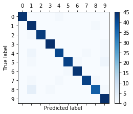
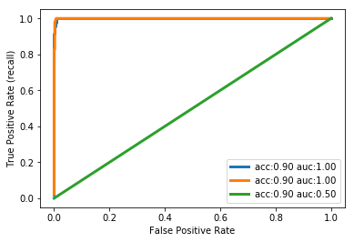
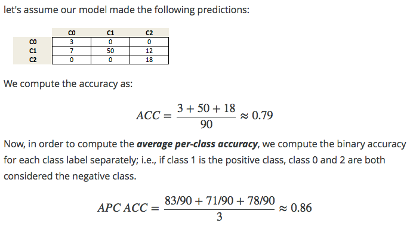

scikit-笔记15:性能矩阵与模型评价
Table of Contents
- 1. Model Evaluation, Scoring Metrics, and Dealing with Imbalanced Classes
- 2. Built-In and custom scoring functions
- 3. Misc tools
1 Model Evaluation, Scoring Metrics, and Dealing with Imbalanced Classes
1.1 beyond the default evaluation of the model
In the previous notebook, we already went into some detail on how to evaluate a model and how to pick the best model(pick the best model means pick the best parameters).
So far, we assumed that we were given a performance measure, a measure of the quality of the model. What measure one should use is not always obvious, though. The default scores in scikit-learn are
- accuracy for classification, which is the fraction of correctly classified samples,
- r2 for regression, with is the coefficient of determination.
These are reasonable default choices in many scenarious; however, depending on our task, these are not always the definitive or recommended choices.
Let's take look at classification in more detail, going back to the application
of classifying handwritten digits. So, how about training a classifier and
walking through the different ways we can evaluate it? Scikit-learn has many
helpful methods in the sklearn.metrics module that can help us with this task:
%matplotlib inline import matplotlib.pyplot as plt import numpy as np np.set_printoptions(precision=2)
from sklearn.datasets import load_digits from sklearn.model_selection import train_test_split from sklearn.svm import LinearSVC digits = load_digits() X, y = digits.data, digits.target X_train, X_test, y_train, y_test = train_test_split(X, y, random_state=1, stratify=y, test_size=0.25) classifier = LinearSVC(random_state=1).fit(X_train, y_train) y_test_pred = classifier.predict(X_test) print("Accuracy: {}".format(classifier.score(X_test, y_test)))
1.1.1 how to know which class are hard to predict in classification problem: method-1
By two tools:
- matshow(2d-ndarray)
- confusion_matrix(true_value_array, predict_value_array)
Here, we predicted 95.3% of samples correctly. For multi-class problems, it is
often interesting to know which of the classes are hard to predict, and which
are easy, or which classes get confused. One way to get more information about
misclassifications is the confusion_matrix, which shows for each true class,
how frequent a given predicted outcome is.
from sklearn.metrics import confusion_matrix confusion_matrix(y_test, y_test_pred)
array([[44, 0, 0, 0, 1, 0, 0, 0, 0, 0], [ 0, 45, 0, 0, 0, 0, 0, 0, 1, 0], [ 0, 1, 43, 0, 0, 0, 0, 0, 0, 0], [ 0, 0, 0, 45, 0, 0, 0, 0, 0, 1], [ 0, 2, 0, 0, 41, 0, 0, 1, 0, 1], [ 0, 1, 0, 0, 0, 42, 1, 0, 0, 2], [ 0, 0, 0, 0, 0, 1, 44, 0, 0, 0], [ 0, 1, 0, 0, 1, 0, 0, 42, 1, 0], [ 0, 4, 0, 1, 0, 0, 0, 0, 37, 1], [ 0, 0, 0, 0, 0, 0, 0, 0, 0, 45]])
A plot is sometimes more readable:
plt.matshow(confusion_matrix(y_test, y_test_pred), cmap="Blues") plt.colorbar(shrink=0.8) plt.xticks(range(10)) plt.yticks(range(10)) plt.xlabel("Predicted label") plt.ylabel("True label");

We can see that most entries are on the diagonal, which means that we predicted nearly all samples correctly. The off-diagonal entries show us that many eights were classified as ones, and that nines are likely to be confused with many other classes.
1.1.2 how to know which class are hard to predict in classification problem: method-2
By one tool:
- classification_report(true_label_array, predict_label_array)
Another useful function is the classification_report which provides:
- precision,
- recall,
- fscore
- support
for all classes.
Precision is how many of the predictions for a class are actually that class. With :
- TP,"true positive"
- FP,"false positive"
- TN,"true negative"
- FN,"false negative"
repectively:
Precision = TP / (TP + FP)
Recall is how many of the true positives were recovered:
Recall = TP / (TP + FN)
F1-score is the geometric average of precision and recall:
F1 = 2 x (precision x recall) / (precision + recall)
The values of all these values above are in the closed interval [0, 1], where 1 means a perfect score.
from sklearn.metrics import classification_report print(classification_report(y_test, y_test_pred))
1.1.2.1 threshold and TPR FPR
threshold = 0.5

all predicted probability > threshold, predict it positive; all predicted probability < threshold, predict it negative;
this means that :
all red pixels to the right of the line are correct predictions; all blue pixels to the left of the line are correct predictions;
accuracy rate = correct predictions %
[真正经，原本正经，你判断他是正经的] TPR = (red region on right of threshold) / whole red region TPR = TP / (TP + NF) = 真正 / (真正+假负) TPR = recall
[假正经，原本不正经，你判断他是正经的] FPR = (blue region on right of threshold) / whole blue region FPR = FP / (FP + TN) = 假正 / (假正+真负)
1.1.3 why method-2 is better for imbalance class and asymmetric cost
These metrics are helpful in two particular cases that come up often in practice:
- Imbalanced classes, that is one class might be much more frequent than the other.
- Asymmetric costs, that is one kind of error is much more "costly" than the other.
Let's have a look at 1. first. Say we have a class imbalance of 1:9, which is rather mild (think about ad-click-prediction where maybe 0.001% of ads might be clicked):
1.1.3.1 accuracy is NOT good evaluation way for imbalance datasets
np.bincount(y) / y.shape[0]
array([ 0.1, 0.1, 0.1, 0.1, 0.1, 0.1, 0.1, 0.1, 0.1, 0.1])
As a toy example, let's say we want to classify the digits three against all other digits:
X, y = digits.data, digits.target == 3
Now we run cross-validation on a classifier to see how well it does:
from sklearn.model_selection import cross_val_score from sklearn.svm import SVC cross_val_score(SVC(), X, y)
array([ 0.9, 0.9, 0.9])
Our classifier is 90% accurate. Is that good? Or bad? Keep in mind that 90% of the data is "not three". So let's see how well a dummy classifier does, that always predicts the most frequent class:
from sklearn.dummy import DummyClassifier cross_val_score(DummyClassifier("most_frequent"), X, y)
array([ 0.9, 0.9, 0.9])
Also 90% (as expected)! So one might thing that means our classifier is not very good, it doesn't to better than a simple strategy that doesn't even look at the data. That would be judging too quickly, though.
Accuracy is simply not a good way to evaluate classifiers for imbalanced datasets!
np.bincount(y) / y.shape[0]
array([ 0.9, 0.1])
1.1.3.2 ROC Curves is better for imbalanced datasets
A much better measure is using the so-called ROC (Receiver operating characteristics) curve. A roc-curve works with uncertainty outputs of a classifier, say the "decision_function" of the SVC we trained above. Instead of making a cut-off at zero(one threshold) and looking at classification outcomes, it looks at every possible cut-off(every possible thresholds) and records how many true positive predictions there are, and how many false positive predictions there are.
The following plot compares the roc curve of three parameter settings of our classifier on the "three vs rest" task.
from sklearn.metrics import roc_curve, roc_auc_score X_train, X_test, y_train, y_test = train_test_split(X, y, random_state=42) for gamma in [.01, .05, 1]: plt.xlabel("False Positive Rate") plt.ylabel("True Positive Rate (recall)") svm = SVC(gamma=gamma).fit(X_train, y_train) decision_function = svm.decision_function(X_test) fpr, tpr, _ = roc_curve(y_test, decision_function) acc = svm.score(X_test, y_test) #<- accuracy_score auc = roc_auc_score(y_test, svm.decision_function(X_test)) #<- auc score plt.plot(fpr, tpr, label="acc:%.2f auc:%.2f" % (acc, auc), linewidth=3) plt.legend(loc="best");

1.1.3.3 interpretation of auc and roc
With a very small decision threshold, there will be few false positives, but also few false negatives, while with a very high threshold, both true positive rate and false positive rate will be high.
So in general, the curve will be from the lower left to the upper right. A diagonal line reflects chance performance, while the goal is to be as much in the top left corner as possible. This means giving a higher decision_function value to all positive samples than to any negative sample.
In this sense, this curve only considers the ranking of the positive and negative samples, not the actual value. As you can see from the curves and the accuracy values in the legend, even though all classifiers have the same accuracy, 89%, which is even lower than the dummy classifier, one of them has a perfect roc curve, while one of them performs on chance level.
For doing grid-search and cross-validation, we usually want to condense our
model evaluation into a single number. A good way to do this with the roc curve
is to use the area under the curve (AUC). We can simply use this in
cross_val_score by specifying scoring="roc_auc":
from sklearn.model_selection import cross_val_score cross_val_score(SVC(), X, y, scoring="roc_auc")
array([ 1., 1., 1.])
2 Built-In and custom scoring functions
There are many more scoring methods available, which are useful for different kinds of tasks. You can find them in the "SCORERS" dictionary. The only documentation explains all of them.
from sklearn.metrics.scorer import SCORERS print(SCORERS.keys())
It is also possible to define your own scoring metric. Instead of a string, you can provide a callable to as scoring parameter, that is an object with a call method or a function. It needs to take :
- a model,
- a test-set features X_test
- a test-set labels y_test
- return a float.
Higher floats are taken to mean better models.
Let's reimplement the standard accuracy score:
def my_accuracy_scoring(est, X, y): return np.mean(est.predict(X) == y) cross_val_score(SVC(), X, y, scoring=my_accuracy_scoring)
array([ 0.9, 0.9, 0.9])
In previous sections, we typically used the accuracy measure to evaluate the performance of our classifiers. A related measure that we haven't talked about, yet, is the average-per-class accuracy (APCA). As we remember, the accuracy is defined as
\(ACC = \frac{TP+TN}{n}\) where n is the total number of samples. This can be generalized to \[ACC = \frac{T}{n},\] where T is the number of all correct predictions in multi-class settings.

Exercise: Given the following arrays of "true" class labels and predicted class labels, can you implement a function that uses the accuracy measure to compute the average-per-class accuracy as shown below?
y_true = np.array([0, 0, 0, 1, 1, 1, 1, 1, 2, 2]) y_pred = np.array([0, 1, 1, 0, 1, 1, 2, 2, 2, 2]) confusion_matrix(y_true, y_pred)
array([[1, 2, 0], [1, 2, 2], [0, 0, 2]])
3 Misc tools
3.1 scikit-learn
3.1.1 ML models by now
- from sklearn.datasets import make_blobs
- from sklearn.datasets import load_iris
- from sklearn.datasets import load_digits *
- from sklearn.model_selection import train_test_split
- from sklearn.model_selection import cross_val_score
- from sklearn.model_selection import KFold
- from sklearn.model_selection import StratifiedKFold
- from sklearn.model_selection import ShuffleSplit
- from sklearn.model_selection import GridSearchCV
- from sklearn.linear_model import LogisticRegression
- from sklearn.linear_model import LinearRegression
- from sklearn.neighbors import KNeighborsClassifier
- from sklearn.neighbors import KNeighborsRegressor
- from sklearn.preprocessing import StandardScaler
- from sklearn.decomposition import PCA
- from sklearn.metrics import confusion_matrix, accuracy_score
- from sklearn.metrics import adjusted_rand_score
- from sklearn.metrics.scorer import SCORERS *
- from sklearn.cluster import KMeans
- from sklearn.cluster import KMeans
- from sklearn.cluster import MeanShift
- from sklearn.cluster import DBSCAN # <<< this algorithm has related sources in LIHONGYI's lecture-12
- from sklearn.cluster import AffinityPropagation
- from sklearn.cluster import SpectralClustering
- from sklearn.cluster import Ward
- from sklearn.metrics import confusion_matrix
- from sklearn.metrics import accuracy_score
- from sklearn.metrics import adjusted_rand_score
- from sklearn.metrics import classification_report *
- from sklearn.feature_extraction import DictVectorizer
- from sklearn.feature_extraction.text import CountVectorizer
- from sklearn.feature_extraction.text import TfidfVectorizer
- from sklearn.preprocessing import Imputer
- from sklearn.dummy import DummyClassifier
- from sklearn.pipeline import make_pipeline
- from sklearn.svm import LinearSVC *
- from sklearn.svm import SVC *
3.2 statistics
3.2.1 coefficient of determination
coefficient determination or called r-square(related to SSR), used to evalute the regression error, is a companion concept of square error or called SSE which is used to evalute the classification error .
R^2 = The proportion of the variation in Y being explained by the variation in X
The larger R^2 the better our regression model
It's a measure of that strength of the relationship between x and y.
3.2.1.1 R^2 and degrees of freedom
R^2 affected by degrees of freedom, see this, and the LinTianXuan lecture
3.2.1.2 R^2 and confidence interval
3.2.1.3 R^2 and hypothesis test
Can we infer a relationship between
Number of medas won by a country
and
- the country's latitude
- the country's average elevation
- the country's population
number of medals = \(\beta_0+\beta_1(latitude_i)+\beta_2(elevation_i) + \beta_3(logpopulation_i)\)
3.2.1.4 R^2 and significance
3.2.1.5 SSR and SSE
why we need SSR or SSE, they are concepts related with variance of a continuous random variable
related URL: https://stats.stackexchange.com/questions/133465/finding-the-mean-and-variance-from-pdf
Third, the definition of the variance of a continuous random variable \(Var(X)\) is \(Var(X) = E[(X-\mu)^2] = \int_{-\infty}^{\infty}{(x-\mu)^2 f(x) dx}\), as detailed here. Again, you only need to solve for the integral in the support. Alternatively, it is sometimes easier to rely on the equivalent expression \(Var(X) = E[(X-\mu)^2] = E[X^2] - (E[X])^2\), where the first term is \(E[X^2] = \int_{-\infty}^{\infty}{x^2 f(x) dx}\) (see the definition of the expectation in the second paragraph) and the second term is \((E[X])^2 = \mu^2\).
see the (x - mu)^2, this is the SST.
what we want to do is weigh the SST(which is fixed when given a dataset each y_i is fixed, the mean of dataset is fixed) coming more from the predict error, or the distance from mean
the larger the SSR, the smaller the SSE, the better the model is

separate the distance between true value and mean of true values (Y_i to
mean(Y_i)) into two components: explained deviation and unexplained deviation:
- \(\hat{Y_i}-\bar{Y}\) predict - mean: explained deviation : sum square to SSR
- \(Y_i-\hat{Y_i}\) true - predict: unexplained deviation: sum square to SSE
\(Y_i\) : the true y-value of a point i
\(\bar{Y}\) : the mean of all true y-values of data points
\(\hat{Y_i}\) : the predict y-value of data point i
\(SSR=\sum(\hat{Y_i}-\bar{Y})^2\) : sum of square due to regression
\(SSE=\sum(Y_i-\hat{Y_i})^2\) : sum of square due to error
\(SST=SSR+SSE=\sum(Y_i-\bar{Y})^2\) : sum of square due to total
\(R^2=SSR/SST\)
3.2.2 auc and roc curve
https://www.youtube.com/watch?v=OAl6eAyP-yo
An roc curve is a commonly used way to visualize the performace of a binary classifier.
Roc curve is a TRP against FRP plot, with a direction of axes shown below:

. ^ large TRP . | . | . | . | . +--------–—> . large FRP
roc curve:
- y axix: True Positive Rate
- x axix: False Positive Rate
what we want is high TRP and low FRP, so we expect the roc curve has expansion direction to up left coner as far as possible.
3.2.2.1 study another plot
example one:

Let's see the whole plot (not the up-left coner roc curve) for whether a paper admitted by journal:
- x-axis: predicted probabilities
- y-axis: count of observations
- pixel: each pixel represent a paper
- blue and red: are the true label distribution of a paper(rejected or admitted)
3.2.2.2 means of each point in the plot
3.2.2.3 representation
example one:
(0.1, 10) means :
- (the axis shows) there are 10 papers which you predict an admission probability of 0.1
- (the region where this point locate in shows) the true status for all 10 papers was negative
example two:

(0.5, 10) means :
- (the axis shows) there are 20(10 blue, 10 red) papers which you predict an admission probability of 0.1
- (the region where this point locate in shows) the true status is that 10 papers was negative, 10 was positive.
3.2.2.4 threshold and TPR FPR
threshold = 0.5
all predicted probability > threshold, predict it positive; all predicted probability < threshold, predict it negative;
this means that :
all red pixels to the right of the line are correct predictions; all blue pixels to the left of the line are correct predictions;
accuracy rate = correct predictions %
[真正经，原本正经，你判断他是正经的] TPR = (red region on right of threshold) / whole red region TPR = TP / (TP + NF) = 真正 / (真正+假负) TPR = recall
[假正经，原本不正经，你判断他是正经的] FPR = (blue region on right of threshold) / whole blue region FPR = FP / (FP + TN) = 假正 / (假正+真负)
3.2.2.5 which fact will affect the ROC curve
ROC curve is a plot of the TPR on the y-axis versus the FPR on the x-axis, for every possible threshold
One threshold only related to a fix TPR and FPR pair.
Each pair of true positive and true negative distribution form one roc curve;
Each choice of threshold on certain pair of distribution form a point of this roc curve;
The larger predicted probability distance (the x-axis shows the predicted probabilities by our model) between this pair distribution, ===> the more roc curve expand to up left coner, ===> the more area of AUC(area under the curve), ===> the better the model is.


3.2.2.6 why roc is better than misclassification rate
Roc curve visualize ALL possible thresholds. misclassification rate only take s SINGLE threshold
3.2.2.7 3 more benifits of roc curve
- better for imbalanced dataset. because it will doesn't change how the roc curve is generated. roc only care about the 'RATE'
- can do multiple classification by 'one vs. all' approach, and you may
should draw 3 curvers instead of 1.
- 1st curve: class 1(possitive) vs classes 2 and 3(negative);
- 2nd curve: class 2(possitive) vs classes 1 and 3(negative);
- 3rd curve: class 3(possitive) vs classes 1 and 2(negative);
- can do minimize FPR or maximize TPR
- minimize FPR: VIP clients admission
- maximize TPR: AIDS testing